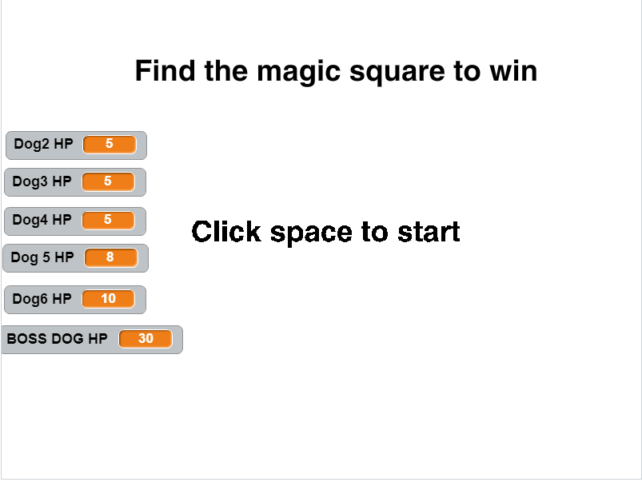
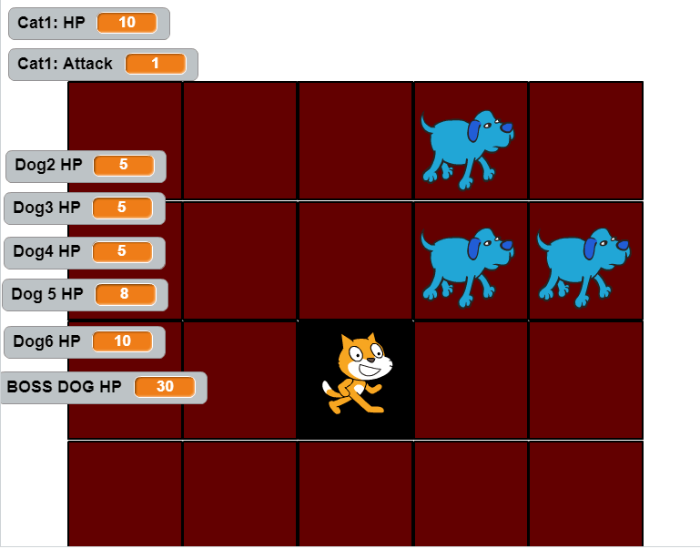
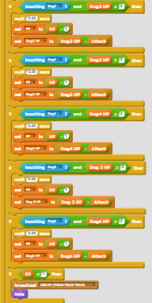

The Legend of Zoomingarrow
 The link to the game
This game is about a cat who wants to explore the world and ultimately destroy the Evil Dog. I implemented a way for players to know the HP of the characters. The use of randomness occured with the 4th, 5th, and final dogs. Their starting location was random. The game gets more difficult everytime a new dog arrives. The player can lose if his/her sprite's HP goes to 0 or below.
I created this game because I knew creating it would be fun. The inspiration was the original Legend of Zelda NES. Two successful points was creating the background and creating the sprites. Two obstacles was setting the variables and letting the sprites die at the correct times. If I had more time, I would make the game bigger and more challenging.
An alg that contributes significantly to this game is the alg that modifies the cat's HP depending on whether it touches the dogs. Also, it changes the background to the lose screen if the cat's HP is lower than one. This is an alg because it's a set of rules.
